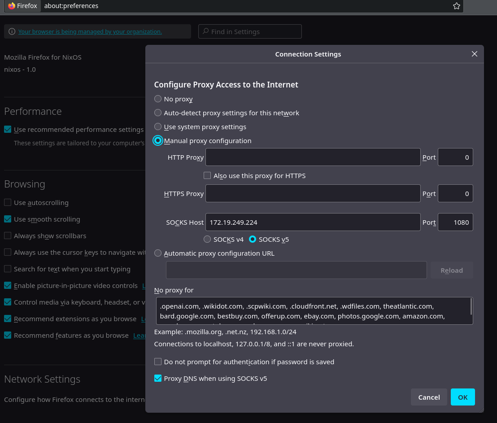
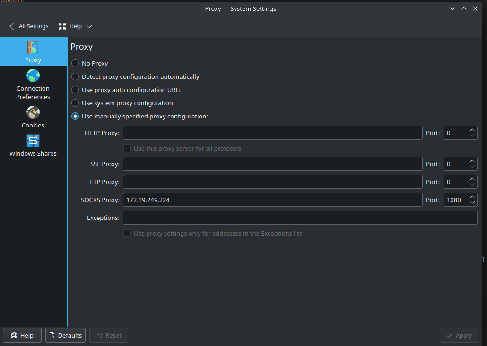

Urestricted Wifi/Hotspot as long as you have one unlimited device
Why
So I was on a plane ride recently, and the plane gave free, unlimited wifi, to one device, as long as you were using a T-Mobile data plan.
I used my phone for a bit, but then I wanted to use my computer.
Okay, so I’m writing this later, after I had written the guide. Apparently, the plan for the boat was 4 devices per person, not total. And even though I had wifi, when I tested USB tethering, it just worked. Either my phone does the proxying automatically or something, because it shouldn’t have worked according to reports of people I’ve talked to online.
But after looking at some configs on my computer, It does look like my phone creates a virtual network which my computer connects to, and proxies all traffic.
How
There is probably an equivalent set of steps you can take to get this setup using iSH, the iPhone terminal emulator, and iPhone USB tethering, as this process is universal, but this guide is written for Android specifically, as that is what I have.
Firstly, tether your phone using USB tethering. Simply plug your android device into your computer, and then in the settings, you can usually find the usb tethering option in the tethering and mobile hotspot options, wireless and networks, or usb preferences sections of settings. Test if this works. I should have tested, instead of trying to do everything in this guide first, because the security of United airlines Wifi seems to be less than that of the cell carrier of that one reddit user who said that simply USB tethering didn’t allow them to get around their carrier hotspot data cap for other devices.
Install termux. Termux is a terminal emulator for android, which gives access to many linux utilities. Yyou can get it from F-droid, or the Github Releases. The version in the Google Play store is outdated, and not recommended.
In termux, first update the system:
pkg update
Then, install the necessary package. We are going to be using a Socks5 Proxy for this.
pkg install microsocks
Now run the command ip a You should get an output similar to this
moonpie@localhost:~/vscode/moonpiedumplings.github.io> ip a
1: lo: <LOOPBACK,UP,LOWER_UP> mtu 65536 qdisc noqueue state UNKNOWN group default qlen 1000
link/loopback 00:00:00:00:00:00 brd 00:00:00:00:00:00
inet 127.0.0.1/8 scope host lo
valid_lft forever preferred_lft forever
inet6 ::1/128 scope host
valid_lft forever preferred_lft forever
2: wlan0: <NO-CARRIER,BROADCAST,MULTICAST,UP> mtu 1500 qdisc noqueue state DOWN group default qlen 1000
link/ether f6:41:0a:25:44:c5 brd ff:ff:ff:ff:ff:ff permaddr 0c:dd:24:ca:bb:f1
altname wlo1
altname wlp0s20f3
3: usb0: <BROADCAST,MULTICAST,UP,LOWER_UP> mtu 1500 qdisc pfifo_fast state UNKNOWN group default qlen 1000
link/ether 2a:56:99:ae:d0:6f brd ff:ff:ff:ff:ff:ff
altname enp0s20f0u1
inet 192.168.67.6/24 brd 192.168.67.255 scope global dynamic noprefixroute usb0
valid_lft 3573sec preferred_lft 3573sec
inet6 fe80::96de:a3e6:3915:6283/64 scope link noprefixroute
valid_lft forever preferred_lft foreverAlthough this is ran from my computer which is currently tethered using this method, so your output won’t be the same. You will lack a usb0 part, and you wlan0 will have an inet value. Note this value, as this is the IP address of your phone on the wifi you are connected to.
Now, for security purposes, it’s important to ensure that the proxy requires authentication, otherwise anyone can connect to it.
microsocks -u username -p password -1 # This command requires a username and password to authenticate once, then whitelists, the connecting ip, so that it doesn’t have to authenticate.
To authenticate the proxy to put your device on the whitelist, you can use any method to connect to a socks5, authenticated proxy, such as curl --socks5 user:password@phoneip:1080 google.com, on your computer or connecting device.
Then, you can connect to the proxy using other means. For example, firefox has a built in option to connect to socks5 proxies, although it does not support authentication.

With this, the traffic from your browser will go through your phone, enabling you to get around the one-device restriction.
Alternatively, on linux, there is usually a proxy options with this setting, to enable you to set a socks5 proxy system wide.
Here is this option in my KDE system settings.

If you have no way to authenticate a socks5 proxy, then you can run an unauthenticated proxy. Simply run microsocks, and connect the same way.
This method works by creating an unauthenticated socks5 proxy server. Although not apparent to the average user, anyone with scanning utilities on the same network can see this server, and connect to it.
If they connect, then no private data of yours will be put in jepoardy.
However, if they do connect they will be able to eat up your bandwidth, potentially slowing your connection down, or they could do illegal things and you could be held liable for them, as it is your connection.
I’m going to see if there is some way to bind this only to the tethered device.
When authenticating to a socks5 server, the passwords are sent over the network in plaintext. Although if you connect over USB tethering, no network should be exposed to the wireless network, if you are connecting directly over the wireless network, then people would be able to sniff your password and connect to your socks5 server.
I might research if there is a way to limit the connections in advance, but it might not be possible with such a small and lightweight server application.
Airplane wifi, and later on when I get to it, boat wifi, are both really slow. Don’t expect much speed from this setup when you are already limited. But I suspect this works great for those who live in areas without internet, but are on cellular data plans that let them created limited hotspots or do limited tethering.